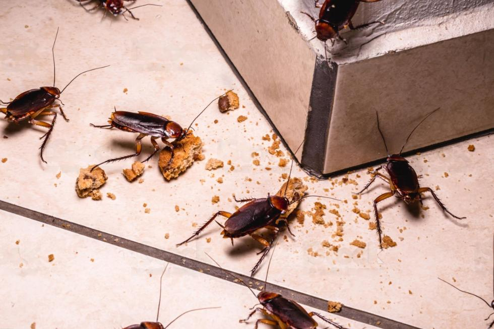
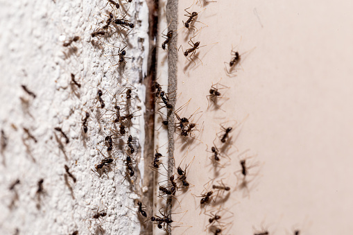
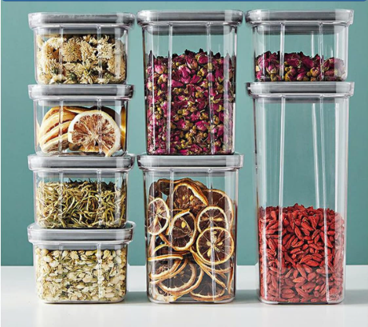
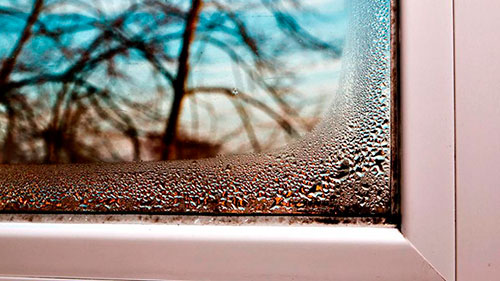
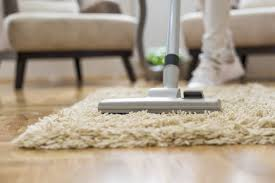
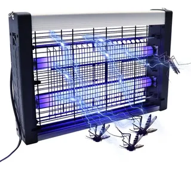
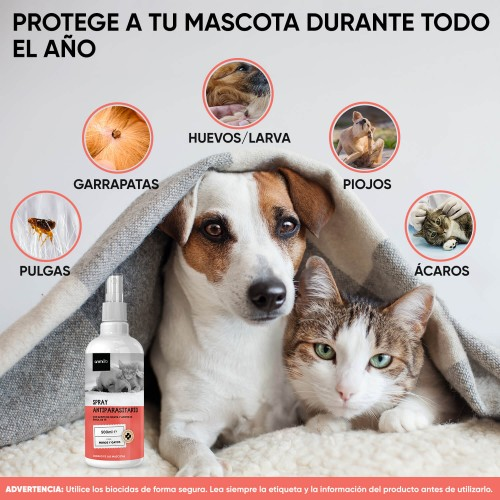
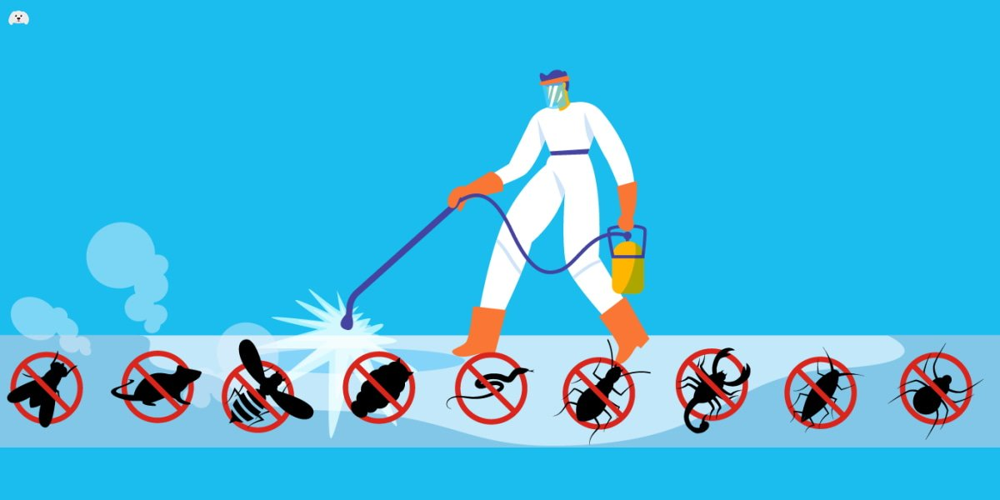
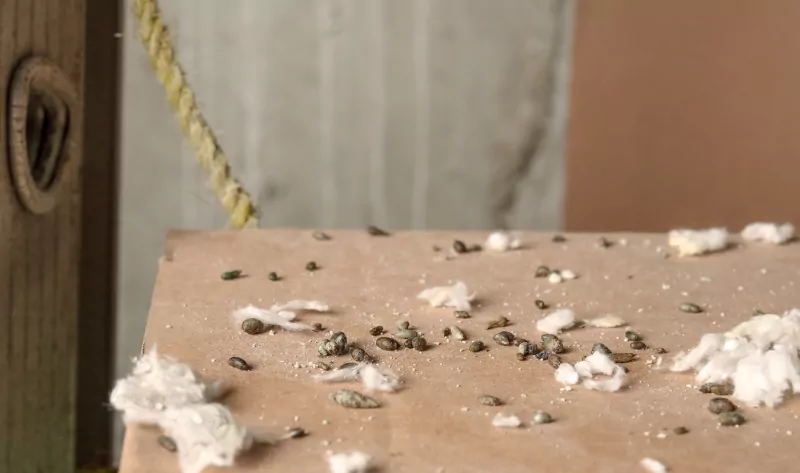
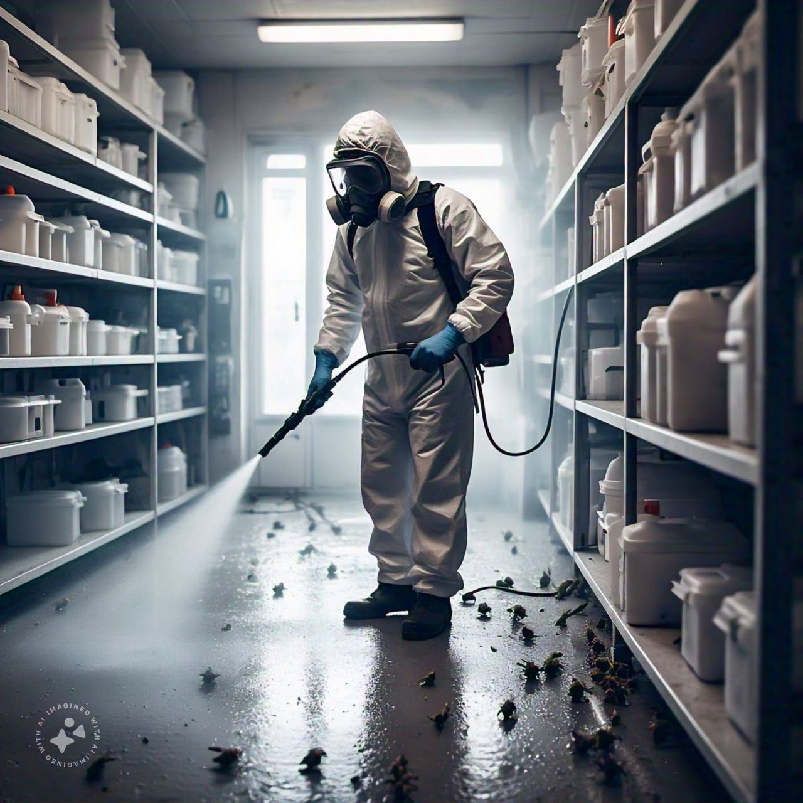

Aquí te traemos algunas de nuestras recomendaciones
1. Mantén la limpieza del hogar o negocio
Las plagas como cucarachas, hormigas y ratones son atraídas por restos de comida. Barre, trapea y limpia superficies con frecuencia.
2. Sella grietas y rendijas
Pequeños huecos en paredes, puertas y ventanas pueden ser puntos de entrada para ratones, arañas y chinches. Usa silicona o burletes para sellarlos.
3. Almacena alimentos en envases herméticos
Evita dejar alimentos expuestos. Las hormigas y cucarachas pueden detectarlos fácilmente.
4. Controla la humedad
Las garrapatas, pulgas y cucarachas prosperan en ambientes húmedos. Revisa y repara goteras, ventila baños y cocina adecuadamente.
5. Aspira alfombras y muebles con frecuencia
Esto es clave para prevenir infestaciones de pulgas y chinches, especialmente si tienes mascotas.
6. Instala mosquiteros y trampas de luz UV
Útiles para prevenir el ingreso de moscas y mosquitos, especialmente en zonas tropicales o húmedas.
7. Cuida a tus mascotas
Usa productos antipulgas y antigarrapatas regularmente. Revisa su pelaje y cama..
8. Realiza fumigaciones preventivas cada 3 a 6 meses
Aunque no veas plagas, pueden estar ocultas. Una fumigación periódica protege tu salud y propiedad.
9. No ignores los primeros signos
Si ves excrementos de ratón, picaduras sin explicación o insectos durante el día, ¡es hora de actuar!
10. Confía en profesionales certificados
Nuestros técnicos están capacitados para identificar, tratar y prevenir cualquier tipo de plaga con productos seguros para humanos y mascotas.
